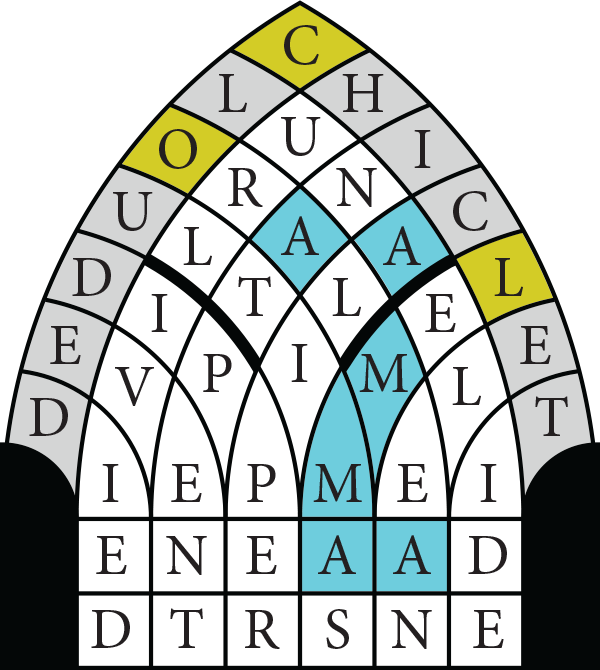
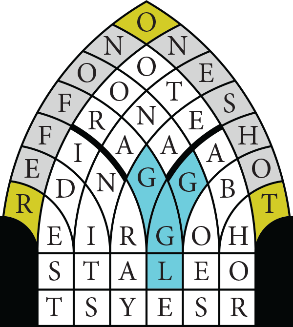
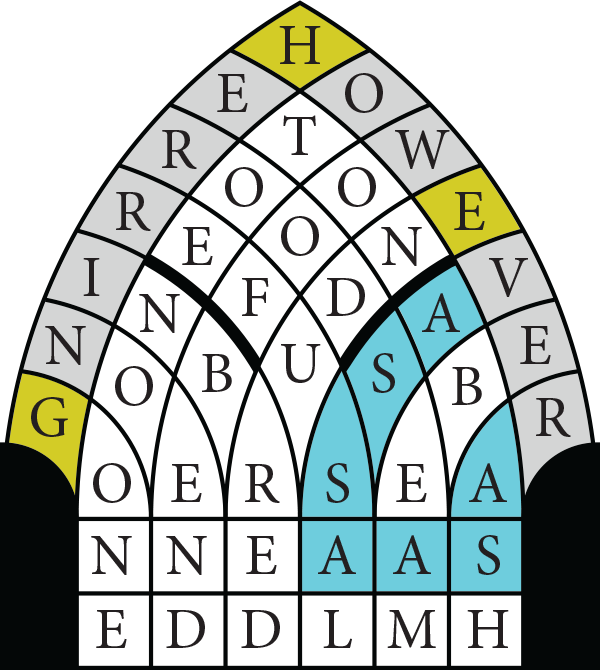
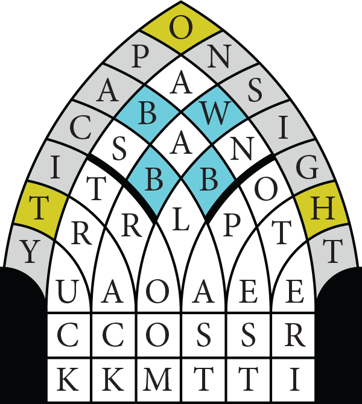
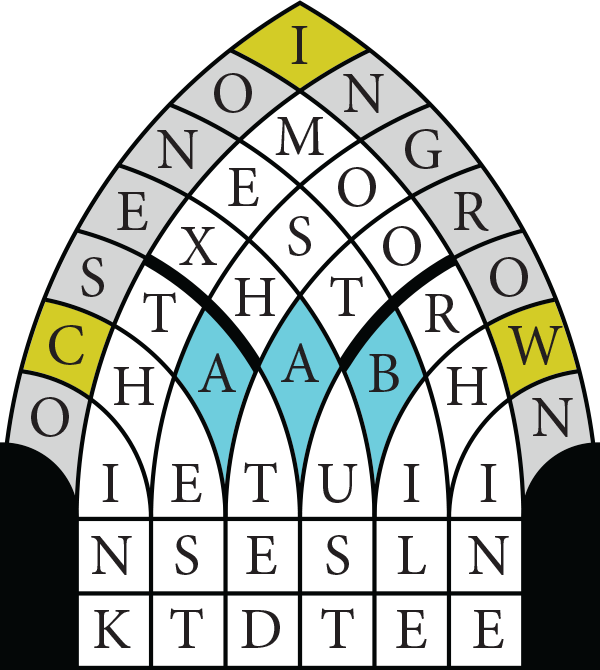
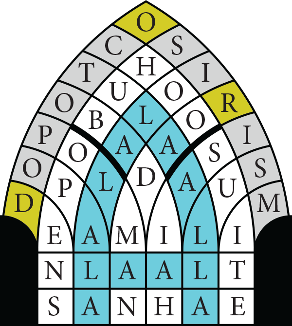
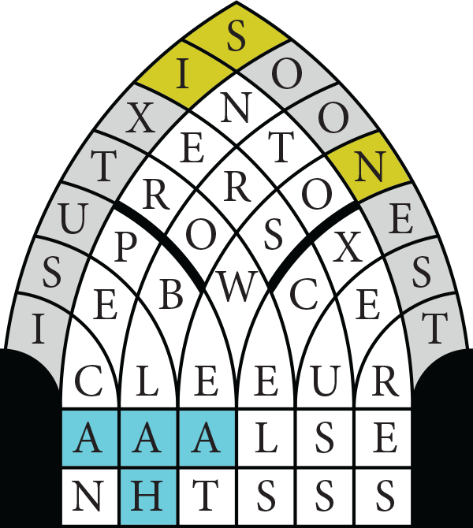
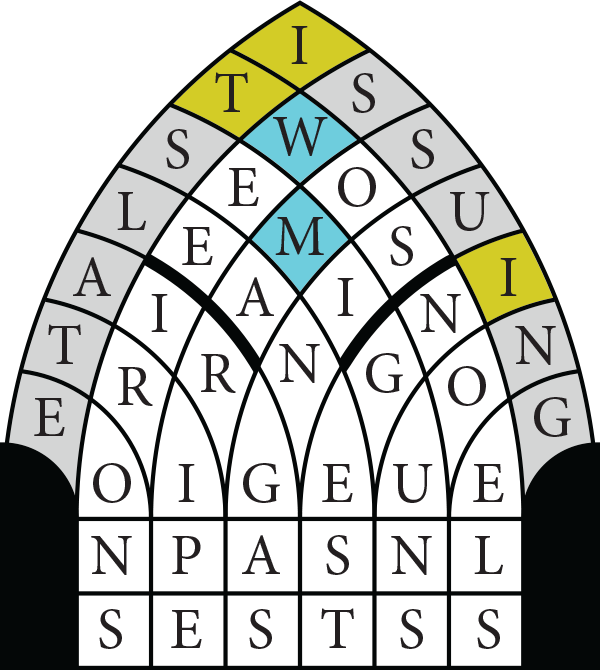
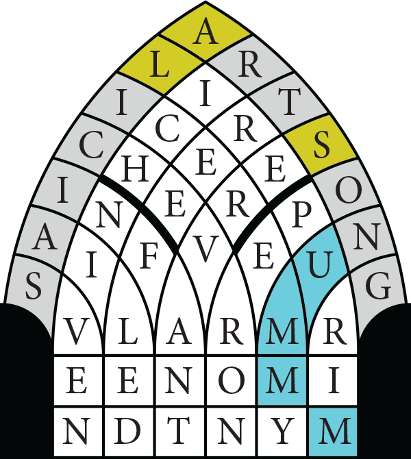

Each set of clues must be solved and the answers arranged in the grid. In each set, one Clockwise clue and one Counterclockwise clue has a word that is actually in Gothic and must be interpreted as such when solving. (This is the relation between stone and stains mentioned in the flavortext: "stains" is Gothic for "stone.")
| CLOCKWISE | | COUNTERCLOCKWISE | |
|---|
| Small bit of gum (7) | CHICLET | One of a pair of measurement devices (7) | CALIPER |
| Perished (4) | DIED | Surrounded by haze (7) | CLOUDED |
| Subset of the stars in either celestial bear (6) | DIPPER | Like Zeno of Zeno's Paradox (5) | ELEAN |
| Omit (5) | ELIDE | Throw (4) | HURL |
| Happening (5) | EVENT | the ground floor (2 2) | IN AT |
| Caesar's moon (4) | LUNA | Like the halls of academia (5) | IVIED |
| Average (4) | MEAN | They're [mins → less] prominent among math results (6) | LEMMAS |
| Set of [aha → mind]-challenging spoken questions (4) | ORAL | Enclosed (4) | PENT |
| Final syllables (7) | ULTIMAS | Effect proportional to the inverse cube of distance (4) | TIDE |

| CLOCKWISE | | COUNTERCLOCKWISE | | | |
|---|
| Detest (5) | ABHOR | Stratovolcano in Sicily (4) | ETNA |
| Modifies the text of (5) | EDITS | Bargain (6) | HAGGLE |
| Support for a fish's flipper (3 3) | FIN RAY | Or, to put things another way (2 3) | ID EST |
| Eater of Doozer sticks (7) | FRAGGLE | Phthirapteran eggs (4) | NITS |
| Travels (4) | GOES | Queen of Jordan until 1999 (4) | NOOR |
| Observe (4) | NOTE | Reed instruments (5) | OBOES |
| Without additional iterations (3-4) | ONE-SHOT | Available for purchase (2 5) | ON OFFER |
| Chaplin of Game of Thrones (4) | OONA | Of the same ashen hue as the ocean (3 4) | SEA GRAY |
| What the [lats → lazy] do (4) | REST | Deity drawn at the speed of the [gaits → goat] (4) | THOR |

| CLOCKWISE | | COUNTERCLOCKWISE | | | |
|---|
| Cause to be ashamed (5) | ABASH | Become curved (4) | BEND |
| School in Berkshire (4) | ETON | Type of lithography using cathode rays (1-4) | E-BEAM |
| Like the wealth of the [arms → poor] (4) | GONE | Didn't disintegrate [suns → immediately] (7) | ENDURED |
| Yet (7) | HOWEVER | Fish that can be red when cured (7) | HERRING |
| With a family tree that overlaps itself (6) | INBRED | "I'm into Something Good" singer (5) | NOONE |
| Exceedingly (2 3) | NO END | Relatives of the Iowa (4) | OTOE |
| Nonacceptance (7) | REFUSAL | Hasty (4) | RASH |
| Cross (4) | ROOD | One with a feudal obligation to a lord (6) | VASSAL |
| Clothing line (4) | SEAM | Comment from man's best friend (4) | WOOF |

| CLOCKWISE | | COUNTERCLOCKWISE | | | |
|---|
| Rhyme scheme of "Jabberwocky" (4) | ABAB | Overtake (2 4) | GO PAST |
| Bioinformatics tool (2-5) | CS-BLAST | Check for Teller's [barn → child]? (1-4) | H-TEST |
| Chamber with computers (2 4) | IT ROOM | Like many springtime flowers (2 5) | IN BLOOM |
| When electromagnetic radiation is detected (2 5) | ON SIGHT | Arrests (4) | NABS |
| Cheri of Saturday Night Live (5) | OTERI | Inability to transmit light (7) | OPACITY |
| One stands before the queen (4) | PAWN | What may mesh with a pinion (4) | RACK |
| Annoyance (4) | PEST | Clean, as a deck (4) | SWAB |
| [Wigs → Path] (5) | TRACK | Garr of Young Frankenstein (4) | TERI |
| "I am disgusted by this" (4) | YUCK | Pickup, for example (5) | TRUCK |

| CLOCKWISE | | COUNTERCLOCKWISE | | | |
|---|
| Gall (4) | BILE | Queensland clock setting all year round (4) | AEST |
| [Barms → Bosom] (5) | CHEST | "Jiminy Cricket!" (4) | GOSH |
| Completely tucker out (7) | EXHAUST | Author of Exit the King (7) | IONESCO |
| Like some individual facial hairs, sometimes (7) | INGROWN | Inverted six (4) | NINE |
| House of sticks (4) | NEST | Ariz. neighbor (1 3) | N MEX |
| Sty cry (4) | OINK | Words following a wagon's target location (2 4) | OR BUST |
| Sequel to Typee (4) | OMOO | Exhibited non-zero angular momentum (7) | ROTATED |
| Wagnerian gold source (5) | RHINE | Find uses for noodles (5) | THINK |
| Asserted (6) | STATED | [Alan → To grow] takes one for a redwood (5) | WHILE |

| CLOCKWISE | | COUNTERCLOCKWISE | | | |
|---|
| breve (with the beat on the half note) (4) | ALLA | Pen name of Ida B. Wells (4) | IOLA |
| Sound reduplicated by trains (4) | CHOO | Forerunner of Jeremiah (6) | ISAIAH |
| Places to concoct your criminal [lists → scheme] (4) | DENS | Land (2 2) | LA LA |
| Forerunner of Jonah (7) | OBADIAH | Wee arachnid (4) | MITE |
| Stratovolcano in Kamchatka (5) | OPALA | Creature with eight legs (7) | OCTOPOD |
| Worship of Horus's father (7) | OSIRISM | Starts the betting (5) | OPENS |
| Former Unilever CEO Paul (6) | POLMAN | Smash Mouth song about a driver hoping to pull in [air → early] (4 3) | ROAD MAN |
| Set of connected rooms (5) | SUITE | -Niggurath (spouse of Yog-Sothoth) (4) | SHUB |
| 18th-century Curaçaoan rebellion leader (4) | TULA | Victor at Orchomenus (5) | SULLA |

| CLOCKWISE | | COUNTERCLOCKWISE | | | |
|---|
| Use terms ruder than "dang" and "shoot" (4) | CUSS | Pedestrian (4) | BLAH |
| Volunteer's statement (1 3) | I CAN | Is outstanding (6) | EXCELS |
| [And → Into] (4) | INTO | Easy on the [hails → whole] (2 5) | NO SWEAT |
| End of many a psalm (5) | SELAH | Extraordinary individual, in the UK (4) | ONER |
| Least far in the future (7) | SOONEST | Other in Oaxaca (4) | OTRO |
| Bricklayer's tools (7) | TROWELS | Praline ingredient (5) | PECAN |
| Cheerful (6) | UPBEAT | Creator of the Sneeches (5) | SEUSS |
| City for which a fortified wine is named (5) | XERES | Predecessor of Pope Telesphorus (6 1) | SIXTUS I |
| Gen (4) | XERS | In Paris, to a great extent (4) | TRES |

| CLOCKWISE | | COUNTERCLOCKWISE | | | |
|---|
| Vaporous fuel (3 3) | AIR GAS | Coalesces (4) | GELS |
| Gigayears (4) | EONS | Treat like [mats → food] (6) | INGEST |
| Revs (4) | GUNS | They solder and curl (5) | IRONS |
| Sending forth (7) | ISSUING | Comment made near a visit's end (2'1 4) | IT'S LATE |
| Most appetizing to Jack Sprat (7) | LEANEST | Terms for persons, places, and things (5) | NOUNS |
| Seasonal songs (5) | NOELS | No longer green (4) | RIPE |
| Rig (4) | SEMI | Brave New World drug (4) | SOMA |
| Edible ruminant innards (5) | TRIPE | Pea (4') | SWEE |
| [Wit → The two of us] and similar groups (4) | TWOS | Causing to fill the role of (5 2) | USING AS |

| CLOCKWISE | | COUNTERCLOCKWISE | | | |
|---|
| Was not at all well (5) | AILED | Keys and Silverstone (7) | ALICIAS |
| Lied (3 4) | ART SONG | Quickly left the scene (4) | FLED |
| ^ (7) | CHEVRON | Gloomy (4) | GRIM |
| Television award (4) | EMMY | Actor in The Pink Panther and The Moon is Blue (5) | NIVEN |
| Cake decorator (4) | ICER | Delicious, slangily (5) | NUMMY |
| Babe (6) | INFANT | Cluster of genes (6) | OPERON |
| Pieces of bread the Italians got [us → away from] (4) | LIRE | Made of money (4) | RICH |
| Feast a month before Passover (5) | PURIM | Stable [magus → boy], say (7) | SERVANT |
| Non-singing Frozen character (4) | SVEN | Ash, for example (4) | TREE |

The keystones, along with the stones in the words with Gothicized clues (in yellow, above) spell out COLOR THE GOTHIC WORDS' INITIALS.
In each grid, coloring in every occurrence of the initials of the Gothic words from the clues (in blue, above) forms a letter; in order, these spell out the answer, ZYGOMATIC.